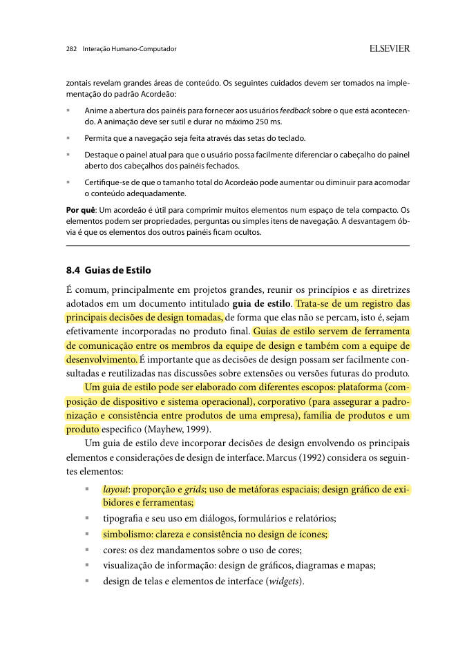
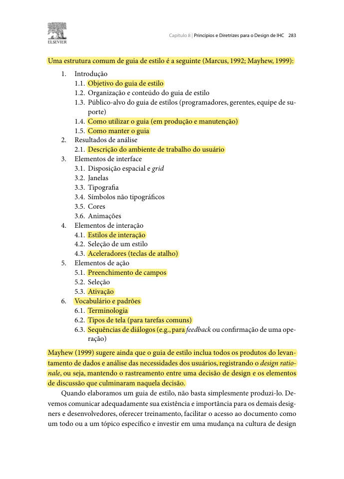

5. Guia de estilo da Avaliação de Disciplinas
Autor: Victor Andreozzi de La Rocque Couto · Revisor: Felipe Lopes Pedroza
Entrega: 3, Princípios Gerais de Projeto, Metas de Usabilidade e Guia de Estilo (parte individual, feita em 27/11/2026 para a funcionalidade de Victor, a partir do que ele entregou nas Entregas 4 a 7) · Funcionalidade de Victor no projeto: Avaliação de Disciplinas
Outros artefatos desta parte: 1. Visão geral e planejamento · 2. Características da plataforma · 3. Princípios gerais de projeto · 4. Metas de usabilidade · 6. Verificação com as listas
Um guia de estilo reúne os princípios e as diretrizes adotados num registro das principais decisões de design, serve de comunicação entre as equipes de design e de desenvolvimento e permite consultar e reutilizar as decisões em versões futuras (Barbosa e Silva (2010, p. 282). O livro propõe uma estrutura em seis partes e recomenda registrar o design rationale de cada decisão (p. 283), como mostram as Figura 10 e Figura 11. Este guia segue essa estrutura e vale para um produto específico: a funcionalidade Avaliação de Disciplinas do NoFluxo UnB.

Fonte: BARBOSA, S. D. J.; SILVA, B. S. Interação Humano-Computador. Rio de Janeiro: Elsevier, 2010. Página: 282, Capítulo 8. Princípios e Diretrizes para o Design de IHC, seção 8.4. Trechos grifados pelo autor.

Fonte: BARBOSA, S. D. J.; SILVA, B. S. Interação Humano-Computador. Rio de Janeiro: Elsevier, 2010. Página: 283, Capítulo 8. Princípios e Diretrizes para o Design de IHC, seção 8.4. Trechos grifados pelo autor.
1. Introdução do guia
- Objetivo: registrar as decisões visuais e de interação da Avaliação de Disciplinas, para que a implementação no site e as versões futuras mantenham o que foi validado com estudantes.
- Organização e conteúdo: seis seções, na ordem do livro: introdução, resultados de análise, elementos de interface, elementos de interação, elementos de ação e vocabulário e padrões; a seção 7 compara o guia com o site.
- Público-alvo: programadores da equipe do NoFluxo UnB que vão implementar a funcionalidade, integrantes do grupo que fizerem novas avaliações e quem der suporte aos estudantes.
- Como utilizar: na produção, consultar antes de criar ou alterar uma tela da funcionalidade; na manutenção, conferir se a alteração mantém as decisões e, se precisar fugir delas, registrar o motivo. O guia apoia o trabalho e a criatividade, não é uma lista de soluções prontas.
- Como manter: o autor atualiza o guia depois de cada avaliação com usuários, com uma nova linha no histórico de versão desta página.
2. Resultados de análise
Os usuários são estudantes da UnB de 18 a 27 anos, nos oito perfis de estudante do grupo, reunidos, só para esta funcionalidade, em dois grupos: quem consulta as avaliações antes da matrícula e quem avalia as disciplinas que cursou (perfil e persona Talita da parte individual da Entrega 2). Usam o celular em deslocamento e o computador em casa ou no campus, avaliam uma vez por semestre e só opinam sobre professores com garantia de anonimato. O ambiente de uso tem sinal instável e pouco tempo (2. Características da plataforma, Tabela 4). Cada decisão das seções seguintes traz, entre parênteses, a origem que a motivou.
3. Elementos de interface
3.1 Cores
| Papel | Tema escuro (padrão do site) | Tema claro | Uso e regra |
|---|---|---|---|
| Fundo | #050507 | #F6F5FA | Fundo das telas |
| Texto principal | #F7F7F8 (19,0:1 sobre o fundo) | #16141C (16,8:1 sobre o fundo) | Corpo de texto, títulos e dados |
| Texto secundário | #A1A1AA (7,9:1 sobre o fundo) | #5A5666 (7,1:1 sobre a superfície) | Dicas, contagens e legendas |
| Roxo de destaque | #9E46F6 (texto branco: 4,5:1) | #9437F0 (texto branco: 5,2:1) | Botão principal, links, seleção na escala; sempre com rótulo de texto |
| Vermelho de perigo | #F05252 (5,6:1 sobre a superfície) | #DC2626 (4,8:1 sobre a superfície) | Só ações destrutivas (“Descartar”) e erros, sempre com texto |
| Verde de sucesso | #22C55E (8,6:1 sobre a superfície) | #16A34A (3,3:1 sobre a superfície) | Confirmação e selo “Você já avaliou”, sempre com ícone e texto; no tema claro, não usar o verde em texto pequeno |
| Alto contraste | Fundo #000 e texto #FFF | Fundo #FFF e texto #000 | Opção de acessibilidade do site, mantida no protótipo |
Fonte: Victor Andreozzi de La Rocque Couto (2026), a partir das variáveis de cor do protótipo de alta fidelidade; razões calculadas pela fórmula de luminância relativa da WCAG 2.1.
Regras: texto de corpo com contraste de pelo menos 4,5:1; nenhuma informação só por cor (nota com número e rótulo, ação com texto, estado com ícone e texto) (guia do grupo; p. 277).
3.2 Tipografia
- Família Inter, sem serifa, com as fontes do sistema como alternativa, a mesma do site.
- Dados em destaque: as médias de dificuldade e de cobrança aparecem em tamanho e peso maiores que os rótulos, com números tabulares para alinhar (correção AF-I6).
- Rótulos, contagens e dicas entre 11 e 14 px (0,69 a 0,875 rem); corpo de texto maior que os rótulos; o estudante pode ampliar o texto pela opção “Texto ampliado” do menu de acessibilidade do site e trocar a fonte por uma de leitura facilitada (Lexend).
3.3 Disposição espacial, grid e símbolos
- Largura máxima de 1.240 px; no computador, o formulário e o resumo das avaliações ficam lado a lado; abaixo de 1.020 px e de 720 px, o layout se reorganiza até ficar em uma coluna no celular.
- Barra inferior fixa com “Descartar” à esquerda e a ação principal à direita (“Revisar e enviar” ou “Confirmar envio”).
- Um único conjunto de ícones de traço, cada um com um só significado: estrela para avaliar, informação para dicas, lixeira para descartar, seta circular para tentar de novo, cadeado e escudo para o anonimato; ícones decorativos ficam ocultos para leitores de tela.
- Animações curtas só para o estado “Enviando…”; respeitam a preferência de movimento reduzido do sistema.
4. Elementos de interação
- Estilo de interação: manipulação direta de formulários na Web: busca e filtros, escalas de 1 a 5 com botões de rádio estilizados, campos de texto e botões.
- Seleção de um estilo: formulário em vez de assistente com várias telas, porque são só duas notas obrigatórias (princípio da simplicidade; problema B-02).
- Aceleradores: setas, Home e End mudam a nota na escala; Esc fecha o diálogo de descarte; Tab percorre os campos na ordem visual.
5. Elementos de ação
| Ação | Padrão | Origem |
|---|---|---|
| Preenchimento de campos | Duas notas obrigatórias por escala rotulada; semestre e professor por lista de opções; comentário em texto livre, até 500 caracteres, com contador | B-06; B-07 |
| Seleção | Disciplina escolhida pelo botão “Avaliar” do resultado ou da página da disciplina; disciplina já avaliada mostra “Avaliada” e não pode ser avaliada de novo | AF-I4 |
| Ativação | Envio em duas etapas: “Revisar e enviar” abre o resumo, “Confirmar envio” envia; durante o envio, “Enviando…” | B-02; PP-03 |
| Ações destrutivas | “Descartar” sempre visível, em vermelho e com texto, com confirmação e foco inicial em “Continuar avaliando” | B-01; PP-05 |
Fonte: Victor Andreozzi de La Rocque Couto (2026).
6. Vocabulário e padrões
| Tipo | Padrão |
|---|---|
| Terminologia | Dificuldade: o quanto a disciplina exige do estudante. Cobrança: o quanto o professor exige dos alunos (listas, trabalhos, rigor na correção e nível das provas); não é uma nota para o professor. Avaliação: notas e comentário de um estudante sobre uma disciplina. Avaliações (no plural): o conjunto visto pelos colegas |
| Tipos de tela | Lista de disciplinas com busca e filtros (T1 e T2); página da disciplina com médias e comentários (T3); formulário (T4); revisão (T5); confirmação (T6) |
| Sequência de confirmação | Formulário → “Revisar e enviar” → resumo com o termo de anonimato → “Confirmar envio” → “Enviando…” → “Avaliação concluída!”, com o link para as avaliações da disciplina |
| Sequência de descarte | “Descartar” → diálogo “Descartar avaliação? Seu rascunho será perdido.” → “Continuar avaliando” (padrão) ou confirmar → aviso de descarte |
| Mensagens de erro | Dizem o que aconteceu e o que fazer, sem códigos: “Escolha um valor de 1 a 5 para a dificuldade da disciplina.”, junto à escala; “Não foi possível enviar sua avaliação. A conexão com o servidor falhou. Suas respostas continuam aqui, nada foi perdido.”, com “Tentar novamente”; busca sem resultado sugere buscar pelo código e oferece “Limpar busca e filtros” |
Fonte: Victor Andreozzi de La Rocque Couto (2026).
7. Correspondência com o site
O protótipo de alta fidelidade foi construído para parecer parte do NoFluxo UnB, e o guia segue o site. A Tabela 12 compara cada elemento do guia com o site e com o guia do grupo.
| Elemento | Site do NoFluxo UnB | Este guia | Corresponde? |
|---|---|---|---|
| Tema escuro | Fundo #050507 e texto #F7F7F8 (medidos pelo grupo) | Fundo #050507 e texto #F7F7F8 | Sim |
| Tipografia | Inter, sem serifa | Inter, sem serifa | Sim |
| Cabeçalho e navegação | Cabeçalho com o menu do site | Mesmo cabeçalho, com o item “Avaliações” | Sim |
| Roxo de destaque | Roxo nos botões e links do tema escuro | #9E46F6 no tema escuro; o guia do grupo propõe #CDB4F0 para mais contraste | Sim, com a proposta do grupo registrada como alternativa |
| Tema claro | Proposto pelo grupo (#FFFFFF e roxo #5B2C83) | #F6F5FA e roxo #9437F0 | Parcial: os tons diferem da proposta do grupo; a unificação fica para a implementação |
| Acessibilidade | Opções de alto contraste, texto ampliado e outras | Mesmas opções | Sim |
Fonte: Victor Andreozzi de La Rocque Couto (2026), a partir do protótipo de alta fidelidade e da Tabela 4 do guia do grupo.
8. Referências
- BARBOSA, Simone Diniz Junqueira; SILVA, Bruno Santana da. Interação Humano-Computador. Rio de Janeiro: Elsevier, 2010.
- GRUPO 02. Entrega 3: Princípios Gerais de Projeto, Metas de Usabilidade e Guia de Estilo (documento do grupo, versões 1.0 a 1.4). Universidade de Brasília, 2026. Disponível em: <https://interacao-humano-computador.github.io/2026.2-Grupo02/entrega3.html>.
- COUTO, Victor Andreozzi de La Rocque. Relato dos resultados da avaliação do protótipo de alta fidelidade da Avaliação de Disciplinas (Entrega 7). Universidade de Brasília, 2026. Disponível em: <https://interacao-humano-computador.github.io/2026.2-Grupo02/entrega7_relato-v-alta-fidelidade.html>.
- W3C. Web Content Accessibility Guidelines (WCAG) 2.1. 2018. Disponível em: <https://www.w3.org/TR/WCAG21/>.
Histórico de versão
| Versão | Data | Descrição | Autor(es) | Revisor(es) | Declaração de ferramenta de IA |
|---|---|---|---|---|---|
| 1.0 | 27/11/2026 | Parte individual da Entrega 3: guia de estilo da Avaliação de Disciplinas, com a estrutura do livro e a correspondência com o site | Victor Andreozzi de La Rocque Couto | Felipe Lopes Pedroza | Claude (Anthropic): organização das páginas, redação das tabelas a partir dos artefatos de Victor nas Entregas 4 a 7 e do protótipo de alta fidelidade, cálculo das razões de contraste e captura e grifo das páginas do livro; as decisões de projeto, as metas e as conclusões são do autor |